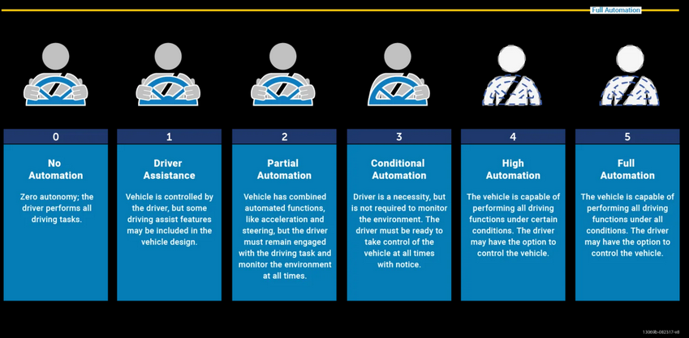

Cybersecurity is an extremely relevant and important technology in this almost exclusively connected world. Although it is a technology, it is more of an aspect of technology; with almost all technology needing to consider its cybersecurity properties these days. Cybersecurity itself is the “practice of protecting critical systems and sensitive information from digital attacks” (IBM, 2021), this means that it is the responsibility of an individual, corporation or application to combat threats against any technology that is networked. Currently Cybersecurity is at an all-time high in defense but also at an all-time high with attacks. As years go on the threats grow consistently, according to techjury.net globally 30,000 websites are hacked daily, 64% of all companies worldwide have experienced at least one form of cyber-attack and every 39 seconds there is a new attack somewhere on the web. This is easily visible even for someone just making a website for yourself, if you start up a blank website with an open http access control list policy you will see the many attempted connections port scanning to see for backdoors into your system every day. Due to the sheer number of attacks state of the art technology must be produced quite consistently and must be ever changing. An example of state-of-the-art Cybersecurity tactics/technologies would be zero-trust environments combined with software-defined perimeters. Zero-trust provides a network or device control over what is visible to a user by using a verification system on every communication while combining constant enumeration of the user’s device so that once the potential threat has timed out the “distant end system can no longer be identified, as no ports will respond to inquiries”. This kind of technology can be used on many kinds of systems and devices and creates an extremely secure user control policy that helps prevent the chance of cyber-attack. This kind of technology can be used on many kinds of systems and devices and creates an extremely secure user control policy that helps prevent the chance of cyber attack.
Since Cybersecurity is such a constant changing field what can be done in the future is very hard to predict but although this is not necessarily a technology what is predictable because of how the average view and knowledge has changed over the years and improving is the idea of “human firewalls”, that certain users and companies are becoming aware of cybersecurity challenges so the knowledge to protect entire environments is improving based on the average user's knowledge of the field. This does not have to be major like knowing how the attacks occur, even small knowledge like how to spot phishing emails and daily virus scans are extremely effective at keeping the threat of small attacks minimal, of course this does not protect from high tier attacks but that is the job for security specialists. This is usually done through company-based policies or even just the normalization of technologies like password managers and VPNs or even just personal experience with how much threat there is in the world today. This is made possible not only by the growing field of cybersecurity but also other technologies in the world today that highlight its importance such as the average user's VPN’s or biometrics becoming a main standing on laptops and phones. Another reason that this is so effective is because although it may be the average user learning about cyber-attacks these “average users” can sometimes include executives of large companies who in the past have not taken cybersecurity seriously and not given it the funding that it deserves. For example, a company 10 years ago may have just got the engineers to provide the security for all applications and networks but these days it is commonplace in secure companies at least for a specific security expert to be hired. This is shown through how much money there is in cybersecurity today, a cybersecurity specialist can be paid $150,000+ for a role in a large company, with “cybersecurity startups raising a record shattering $29.5 billion in venture capital last year, more than doubling the $12 billion raised in 2020”.
Because of the growing knowledge of cybersecurity and the threats that every company faces, cybersecurity is an ever-growing field with thousands of extremely well-paying jobs being made every year and that statistic is likely only going to grow as more and more companies face cyber attacks and crises and realise that they need professionals in that field. Although this will increase the cyber security of almost every company and application over the years, cyber security experts are still swamped with how many attacks there are and that is only likely to grow. This is very easily shown by websites like threatmap.checkpoint.com which shows that the top targeted industries are “education, government and Isps” and also highlights how global these threats are with countries like “Mongolia, Georgia and Nepal” being the highest rate of attacks per organization. This will mean that jobs in these countries and sectors will continue to grow in the cybersecurity field, while companies and governments will increase the budget on cyber related policies and fields. I do not believe any cybersecurity based technologies or advancements will replace or make any jobs redundant, although that is not the case with other legacy technologies. As the field of Cybersecurity broadens, legacy technologies will be insufficient in stopping cyberattacks as this is the nature of cybersecurity; Cyber-attacks are usually created because of a limitation found in security software or people. This does result in technologies becoming outdated within years to months if they are not properly updated and maintained.
Although many may not pay much attention to the idea of cybersecurity and cyber-attacks in their daily life, that is quickly changing. For myself (Hamish), This has already started to affect me with me changing password habits and the specific software I use on my devices to keep me and my data safe. This is only likely to keep changing as more and more complicated attacks are created and schemed, especially if I go to work in a larger company as a security specialist. An example of how this has already affected my life, I work as an Operational Engineer grad at a company that mainly focuses on Java based software. a few months ago, log4J was found; an exploit in certain older versions of Java that is extremely easy to perform, this means that almost all staff had to go back to our legacy software and immediately update all SaS and instances that run it which took quite a while. Regarding how the everchanging field of cybersecurity impacts those around me, it will change some of their behaviors. For one I think that password managers are almost going to be a must have, but the biggest impact will just be how they interact with anything connected as the more this field is publicly spoken about the more scared/worried people get about it which will increase their cybersecurity. Not only will their actions have an impact but because of companies that they use taking security more seriously their data will be better protected from data breaches and other attacks without them realizing.
References
What does it do?
First let's start off with the definition of an Autonomous vehicle (AV), by definition, an Autonomous vehicle is, (Synopsys, 2022) “a vehicle capable of sensing its environment and operating without human involvement. A human passenger is not required to take control of the vehicle at any time, nor is a human passenger required to be present in the vehicle at all. An autonomous car can go anywhere a traditional car goes and can do everything that an experienced human driver does.”
Autonomous and self-driving/automated driving often get used interchangeably, yet they technically do mean different things. For a car to be fully autonomous it would fall under the level 5 section of the image above, where the vehicle is able make its own choices and be self-aware of its actions. A self-driving car on the other hand would fall between the level 3 and level 4 sections of the image above, this is where, while the car can drive itself in different conditions, someone must always be present within the car and ready to take control when needed. But how much closer is it to cars having the fully automotive function built in? Studies show that by 2030, 1 in 10 cars globally will be fully automated, though there are many challenges that such an industry faces, and therefore it is only speculation.
The most common type of Autonomous cars that the world is experiencing now are the TELSA cars. Founded in 2003, the TELSA company aimed to prove that electric and vehicles can be far more enjoyable for humans to use rather than driving petrol fueled cars. In 2008 Tesla revealed its state-of-the-art battery technology and powertrain, where they then developed the first all-electric car (Model S). In 2014, The Autopilot, which is Tesla’s advanced assisted driving program, was implemented into Tesla's vehicles. The company then slowly introduced more advanced updates and features for the programs until the first meaningful autopilot update was released. While Tesla is currently the most well-known for autonomous cars, there are many other car brands which are also working towards the same goal of putting their own autonomous cars on the road. Cars such as the BMW 740i, Chevrolet Volt and the Mercedes-Benz S-Class Sedan all have the autonomous driving function which is normally around the level 3 & level 4 level of automation.
The technology used in autonomous cars is very extensive and overly complicated. It consists of a range of sensors, actuators, complex algorithms, machine learning systems and powerful processors to execute software and commands. Car manufacturers must use vast amounts of data from image recognition systems, neural networks, and machine learning to build vehicles with autonomous driving capabilities. The way that the neural network’s function is by identifying patterns from the data, which is then passed onto the machine learning algorithms, allowing it to identify traffic lights, trees, pedestrians etc.
The following explains how Googles self-driving car called Waymo works
Likely impact?
Due to the new strong interest in autonomous vehicles, self-driving cars may have a similar impact on the auto industry that the smartphone had on telecommunication: unpredictable and massive. AV research is focused currently on driverless fleets known as mobility-as-a-service (MaaS), like uber, these would be called on with the press of a button. These fleets would be far more cost effective as drivers don’t need to be paid but then that leads to unemployment and reduces job positions significantly. Also, it may cause a ripple effect from the decline of private car ownership to fuel prices and insurance costs. It is estimated that autonomous cars could eliminate 300,000 driving jobs a year, according to a May 2017 Report from Goldman Sachs, but that won’t happen right away, the report estimates that by 2025-30 autonomous cars will be 20% of car sales, although, it also opens a lot more jobs that surround the manufacturing of the cars and the programming of the software that the autonomous cars use. Another large positive with autonomous cars is that most of them tend to be fully electric, meaning they have a positive impact on the environment, reducing the large output of carbon emissions and the increasing reduction in fuel consumption. Driverless cars also mean fewer cars per household. One vehicle can now do all the tasks that two or three cars might be needed for. For example, one vehicle can now drop the kids off at school, take both mom and dad to work, and then park itself until it’s time to pick them back up.
How will this affect you?
references
Machine learning is a subset of AI that uses data to have a computer learn something that is not explicitly programmed, for example machine learning can be used to teach a computer to tell the differences between a cat and a dog without this being programmed into the system. This is done by giving the computer a data set that will teach the computer to differentiate between the two animals, with time it will become more efficient with noticing these differences. Machine learning in concept is the same way that humans learn, by having data and repeated experiences of trial and error shape our learning experiences, a baby who has never seen a cat or dog may have trouble noticing the differences but when they are older, they will likely have no issue and be very efficient at telling the difference between the animals.
The first machine learning program to be created was completed in 1952 by Arthur Samuel and was a program that would learn checkers; the program had the goal of being able to beat professional players over time which it did in a publicized match in 1962. Since then, machine learning has come a long way with many examples being used by virtually all tech and social media companies. Meta’s Instagram uses machine learning to curate posts for the user based on things that they like, the program detects what kind of content a user frequently seeks and views and uses this information to show the user similar posts. Meta also collects data such as amount of time on an account, frequent searches and much more to feed its machine learning service, this is also done to target ads. Machine learning of this kind is used by all social media outlets to promote user retention and to maximize profits. Emails use machine learning to filter spam and is especially useful as using machine learning allows these programs to be fed new spam emails and quickly adapt to new spam techniques and continue protecting inboxes from unwanted emails. Popular commercial use of machine learning is in virtual assistants such as Alexa and Google Home, these products collect data of its users and try to create an easier and accessible experience. For example, if a user wakes up every morning and asks their assistant for the weather or to play music, the device will keep this data and likely will present the option for this to be done in a routine or follow necessary steps to make this process easier. These virtual assistants also use machine learning to recognize different accents and are now able to adapt to non-American accents. The next step for machine learning is likely to become a part of many new innovations such as self-driving cars, which seemingly is what will be the largest machine learning based commercial device that is currently being pursued. Self-driving cars use machine learning as they need a large amount of driving data to be able to function correctly, the car must be able to recognize when to stop, when to turn and other decision making. Machine learning is necessary for the car to be able to adapt to its surroundings as it moves. With the advancements that are being developed, self-driving cars will become safer and safer with better computing power and faster machine learning will make self-driving cars more efficient and safer than having a human driver. As computers get faster and more powerful, machine learning will get faster and more efficient and many organizations are focusing on the advancement of AI and machine learning, it is likely that these technologies will become more popular publicly and privately.
Many jobs have and will be made redundant because of technology, AI and machine learning will continue to do so with these technologies being faster and more efficient than humans. Like stated before with automated cars, many other things can be replaced with the same machine learning programs, maintenance work can be done by a machine learning computer and a robot, security work and more will become much more advanced with the implementation of machine learning. This is already becoming a reality with facial recognition software being used for law enforcement, the process of facial recognition is based on machine learning, with the process involving the recognition of someone's face based on government databases, a computer can collect, store and identify all information about a person. This is currently being used as a law enforcement tool, but many have misused the tool and many more fear how the advancement in this technology affects privacy and peoples rights. It is likely that with the advancements in AI that many jobs will be replaced by machines, but with the loss of those jobs, more will come to replace it especially in the technology and programming fields with a shift in many industries turning towards these skill sets as work is better done by technology. This can already be seen now with factory work being done by robots and the push for self-driving vehicles. Banks use machine learning to help protect you from stolen and fraudulent charges from your bank accounts, they use information and data about you that they collect such as where you live, recent purchases and more to protect you against theft. The way this works is that banks use your typical use of your bank and compare it with all of the purchases to an account. So if a purchase is made online to a country you have not made a purchase in, the algorithms will detect that this was likely not you and will terminate and warn you about this charge. Machine learning also is a great tool being used in the medical field. It allows for faster diagnosis of some illnesses with this being used to help people with the rate of correct diagnosis being as good or even better than that of professional clinicians. Predictive models in machine learning also go a long way when supporting the medical industry, with computers being able to use a patient's medical history to predict a likely outcome of a patient and the best courses of action. There has also been extensive research into how this technology can be used to help with the early diagnosis of heart failure, something that is difficult to predict but research hints that a computer is able to detect signs of the illness that is impossible to a human.
Machine learning is already helping you with your everyday life, machine learning algorithms help with apps such as google maps to estimate commute times, help with medical diagnosis and keeping your banking and finances safe from fraudulent purchases. It is likely that machine learning will become increasingly a part of everyday life, with the tool already being used by many to help with everyday life.
add info HERE